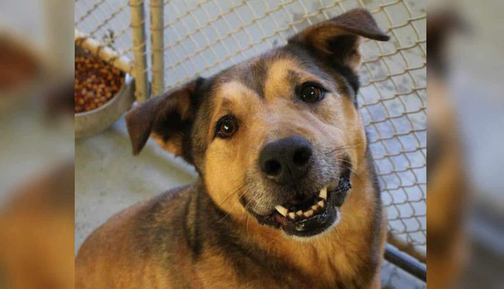

.jpeg)
CHEWPAWS

¿Quién Soy?
CHEWPAWS es una fundación sin ánimo de lucro creada en abril del 2026 por una chica voluntaria sin experiencia en el rescate y adopción animal. Que decide después de recibir un diagnóstico tardío de Asperger y gracias al amor que siempre le dio su fiel compañero Chewbacca por el cuál la vida le fue más fácil a pesar de un diágnostico tardío. unir su conocimiento, entusiasmo y pasión para luchar por los más indefensos y realizar una labor por un bien social. Se dan en adopción perritos y gatitos rescatados en situación de calle, abandonados, atropellados, maltratados, moribundos, etcétera, a los que se les cura, entrena, rehabilita, esteriliza, desparasita y vacuna para darlos en adopción responsable.
Se buscan familias que los acepten y respeten como a un miembro más. Promovemos la esterilización de todas las mascotas para evitar la sobreproblación, sufrimiento y muerte de tanto indefenso en la calle.
Una gran parte de los peques están en hogar temporal y, otros tantos, en un pequeño albergue. Contamos con un total de 5 hogares temporales fijos repartidos en la Ciudad De Puebla. De esta manera podemos dar atención especializada y única a nuestros rescatados. Si estás interesad@ en adoptar escríbenos a chewpaw@gmail.com
